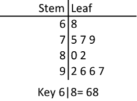
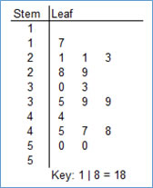
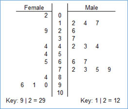
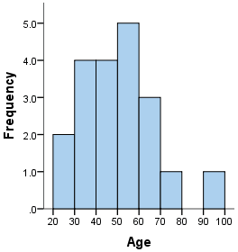

You can represent quantitative data with many kinds of graphs
A stem and leaf plot is good for small datasets

To write one: write the stems in order, and leaves in rows. Separate the two features with a column, as shown above
Don't forget a key that shows how to read the graph
A plot can have split stems in which one stem is shown twice (or mode), splitting the leaves to be in either of the two (for example, leaves in the range 0-4 go in the first stem, and 5-9 go in the second

A back to back stem plot can be used to compare two similar data sets
Use the same stem for both sets. One data set's leaves go on one side, the other's on the other side
When needed, round for better leaves and more readable data

A histogram graphs numbers by grouping them into classes

Each class/group must have the same "width" - i.e. 0-9, 10-19, 20-29
Be smart when choosing class size - it affects the shape of the graph
Bars must be TOUCHING
Use a percents or counts in the y-axis to represent relative frequency or frequency
After making a graph, it is important to look for trends
Overall patterns:
Shape has many different aspects
To describe shape, looking for major features that stand out on the graph
Symmetry is when the left and right sides of the graph look the same
A graph is skewed when one side is longer than the other
A left skew is when the left tail is longer than the right, and vice versa
Modality represents how many peaks the graph has. A unimodal graph has one peak, a bimodal graph has two, and a multimodal graph has more than two
When looking at modality, ignore small bumps; they don't count as peaks
Center is simply where the data is centered around, usually described by the median, or sometimes mean
Spread is how much the data varies; the range
Departures are things "outside" the general pattern
An outlier is value that clearly stands out from the rest of the data points